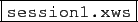

suivant: Fermer une session
monter: Comment bien utiliser les
précédent: Editer une session existante
Table des matières
Index
On peut passer d'une session à une autre en cliquant sur son nom,
par exemple en cliquant sur
. Son nom
est alors en surbrillance.
Documentation de giac écrite par Renée De Graeve